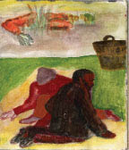

Fatma Okumuş
Yeniden okumayı savsaklayanlar
her yerde aynı öyküyü okumak
zorunda kalırlar. (Barthes, 1996: 25)
Giriş
Yale Üniversitesi'nden edebiyat profesörü Harold Bloom, 1994 yılında, Dante, Shakespeare, Goethe, Cervantes gibi 26 yazarın çevresinde kurduğu Batı Kanonu (The Western Canon) adlı çalışmasında, feminist, yeni tarihselci, Freudçu ya da Lacancı, anlambilimci, yapısalcı ve diğer birçok akademisyenin, edebiyat eserlerini çözümleme çalışmalarından söz eder. Böylece, edebiyat eserlerine cinsel, psikanalitik, sosyolojik, ideolojik gibi farklı açılardan bakma yolları ediniliyor, ancak diğer taraftan okur, eseri okurken daha 'uyanık' kılınıyordu. Hatta Bloom, bu tür çalışmalar nedeniyle, üniversitelerdeki dil ve edebiyat kürsülerinin zamanla 'Kültürel Çalışmalar' altında yer alacağını söylüyordu.
Benzer çözümleme çalışmaları filmler için de yapılıyor. Filmler de feminist, psikanalitik, sosyolojik, ideolojik ve başka birçok açıdan ele alınıp inceleniyor. Bu nedenle, izleyici belki artık daha 'uyanık' izliyor filmleri. Yine de ister karanlık sinema salonlarında kalabalık içinde, ister okuma ve izleme köşemizde tek başımıza olalım, bize hikâye anlatan bir film izlemekten ya da bir kitap okumaktan zevk alıyoruz. Hikâyelerle buluşmaktan hoşlanıyoruz ya da Didion'un (2006: 179) söylediği gibi, "Yaşamak için hikâyeler anlatıyoruz".
Sanatçılar, birbirinden çok farklı araçlarla hikâyeler anlatabiliyorlar. Böylelikle aynı ya da benzer hikâyelerle farklı sanat eserlerinde karşılaşabiliyoruz. Bir sanat eserinden hareketle yeni bir sanat eserinin yaratılması, akla hemen uyarlamaları getiriyor ve kolaylıkla söylenebilir ki sinema filmlerinde uyarlamalarla sıkça karşılaşılıyor.
Sinema, hikâye anlatıcılığı açısından, diğer sanat dallarına oranla edebiyatla, daha yakın bir ilişki içindedir ve bu ilişkinin temelinde uyarlamalar yer almaktadır. Kurulan ilişkinin bağlantı noktası genelde, romanlar ve tiyatro oyunlarıdır. Dolayısıyla, şiirden hareketle gerçekleştirilen film uyarlamaları daha azdır. Bu noktada, filme aktarılanın bir eser değil, o eserde anlatılan hikâye olduğu göz ardı edilmemelidir. Dolayısıyla, 'uyarlama' sürecine ilişkin var olan yargılarımız gözden geçirilmelidir.
Uyarlama filmlere farklı bakılması açısından, Yavuz Turgul'un bir şiirden hareket eden Fahriye Abla (1984) ile bir resimden hareket eden Av Mevsimi (2010) filmlerinin incelenmesi, özellikle hikâye anlatımı açısından sinemanın şiir ve resim ile etkileşimini örneklendirebilir.
Yavuz Turgul'un Fahriye Abla filmine kaynaklık eden şiir:
FAHRİYE ABLA
Hava keskin bir kömür kokusuyla dolar,
Kapanırdı daha gün batmadan kapılar.
Bu, afyon ruhu gibi baygın mahalleden,
Hayalimde tek çizgi bir sen kalmışsın, sen!
Hülyasındaki geniş aydınlığa gülen
Gözlerin, dişlerin ve ak pak gerdanınla
Ne güzel komşumuzdun sen, Fahriye abla!
Eviniz kutu gibi küçücük bir evdi,
Sarmaşıklarla balkonu örtük bir evdi;
Güneşin batmasına yakın saatlerde
Yıkanırdı gölgesi kuytu bir derede.
Yaz, kış yeşil bir saksı ıtır pencerede;
Bahçende akasyalar açardı baharla.
Ne şirin komşumuzdun sen, Fahriye abla!
Önce upuzun, sonra kesik saçın vardı;
Tenin buğdaysı, boyun bir başak kadardı.
İçini gıcıklardı bütün erkeklerin
Altın bileziklerle dolu bileklerin.
Açılırdı rüzgârda kısa eteklerin;
Açık saçık şarkılar söylerdin en fazla.
Ne çapkın komşumuzdun sen, Fahriye abla!
Gönül verdin derlerdi o delikanlıya,
En sonunda varmışsın bir Erzincanlıya.
Bilmem şimdi hâlâ bu ilk kocanda mısın,
Hâlâ dağları karlı Erzincan'da mısın?
Bırak, geçmiş günleri gönlüm hatırlasın;
Hâtırada kalan şey değişmez zamanla.
Ne vefalı komşumdun sen, Fahriye abla!
Ahmet Muhip Dıranas

Yavuz Turgul'un
Av Mevsimi filmine
kaynaklık eden resim:
Yavuz Tanyeli (isimsiz)
Uyarlama
Sinemanın, başlangıcından bu yana, diğer sanat dallarıyla, özellikle edebiyatla ve resimle çok sıkı ilişki içinde olduğu tekrarlanagelen bir yargıdır. Bu bağlamda da Virginia Woolf'un "Tuhaftır ki; bütün sanatlar çıplak doğarken, sanatların en genci baştan aşağı giyinik olarak dünyaya geldi. Söyleyecek bir şeyi olmadan önce her şeyi söyleyebilir oldu." (aktaran Kale, 2010: 266) sözleri sıkça hatırlatılır.
Öncelik ve sonralık değerlendirmesinde, sanat dalı olarak 'yedinci'lik kazanan sinemanın, edebiyatı, özellikle de hikâye anlatılarının en yaygın türü olan romanı, hikâyeyi ve tiyatroyu kullandığı düşünülür. Üstelik, edebiyat eseri ile uyarlama film arasında karşılaştırmalara gidildiğinde, eğer filmin, kaynağına sadık kalmadığı belirlenirse, edebiyat eserine haksızlık edildiği görüşüyle karşılaşılması da olasıdır.
Sinema uyarlamalarında ortaya çıkan film, kaynak olarak kullandığı eserde anlatılan hikâyeyi, sinematografik bir dille yeniden anlatmaktadır. Aynı hikâyenin farklı yöntemlerle anlatılması, yazınsal ya da sinematografik eserlerle sınırlı değildir. Sanat tarihi boyunca birçok eser, birbiriyle alışveriş içinde olmuştur. Bir resim bir romana, bir roman da bir filme kaynaklık edebilir. Böylece, anlatım araçları farklı olsa da anlattıkları herhangi bir noktada örtüşen eserler ortaya çıkabilir. Üstelik anlatım araçları ve biçimleri giderek artmaktadır.
Gelişen taşınabilir teknolojik araçlar üzerinden, aynı hikâyenin yeni anlatım biçimlerine uyarlanması söz konusudur. Örneğin, bildik hikâyeler, yeni anlatım olanaklarına uydurulup birkaç dakikalık kısa filmlere uyarlanarak cep telefonlarımızda ya da e-posta kutularımızda oynatılmaktadır.
Genelde uyarlamaların çoğunun merkezinde bir hikâye durmaktadır ve hikâye anlatıcılığı, uyarlamaların temel konusu olarak görünmektedir. Uyarlamalarda aynı hikâyenin ikinci kez anlatımı söz konusudur. Bir bakıma ikiz hikâyeler yaratılmaktadır. Sinemadaki uyarlamalar, ikizlemelerle ilerleyen hikâye anlatıcılığı üzerinden gelişiyor görünmektedir. Hikâye anlatıcılığı üzerinden ve sanat eserlerinin anlatım dilinin farklılığının göz önünde tutulmasıyla uyarlama süreci, 'aslı'na sadakat dışında da bir bakış açısı kazanabilir. Bir şiirin ve resmin içinden birer hikâye çıkaran Yavuz Turgul'un Fahriye Abla ve Av Mevsimi filmleri, uyarlama sürecinde farklı kaynaklardan yararlanılmasının Türk sinemasındaki ender örneklerindendir.
Filmlerin kaynak aldığı farklı metinlerle olan ilişkisinin açımlanması, uyarlama teorisine ilişkin görüşlerin gözden geçirilmesini gerektirmektedir.
En genel anlamıyla uyarlama, "herhangi bir biçimde üretilmiş bir metnin, başka bir biçimde yeniden üretilmesi" olarak tanımlanabilir. İletişim kurmayı sağlayan her ileti bir metin olduğundan, çok geniş kapsamlı bir araç olan metin, hemen hemen her şeyi kapsar. Metinler, yalnızca sözcük, cümle gibi dil birimlerinin kullanıldığı, sözlü ya da yazılı olarak üretilen yapılar değildir. Dolayısıyla sözlü ve yazılı öğelerin yanı sıra görsel öğeleri içeren metinler de söz konusudur. Örneğin, izlediğimiz televizyon reklamları, filmler, gördüğümüz afişler, fotoğraflar, resimler ve birçok şey ileti sunabilir. Böylece alıcısı tarafından anlamlandırılabilir. Bu anlamlandırma süreci de bir çeşit 'okuma'dır aslında. Bu nedenle, film veya resim okumaktan söz edilebilmektedir. Yaşamda her yerde ve her biçimde karşılaşılan metinler, Bordwell'in tanımlamasıyla, "Zaman ve mekân içerisinde, neden-sonuç ilişkilerine bağlı olarak gelişen olaylar zinciri"ni (Bordwell, Thompson, 2008: 75) ortaya koyan anlatılar sunabilir. Anlatı söz, yazı, görüntü, el-kol-baş hareketi ya da bunların bileşiminden oluşabilir. (Barthes, 1997: 87). Buradan hareketle mitler, efsaneler, destanlar, öyküler, romanlar, tablolar, filmler, sıradan konuşmalar vb. birer anlatı olacaktır. Dolayısıyla anlatılar, kurmaca da olabilir; yönlendirici, yasaklayıcı, ikna edici vb. de olabilir. Barthes'ın (1997: 86) deyişiyle anlatı ister iyi, ister kötü olsun, hep vardır ve anlatılar sınırsızdır. Üstelik bazı anlatılar, sunduğu olay örgüsüyle evrensellik kazanmıştır. Nereye gidilirse gidilsin, tanık olunabilecek hikâye anlatıcılığıyla, çeşitli biçimlerde benzer ya da aynı hikâyeler dolaşımdadır. Hikâye anlatıcılığında olaylar, neden-sonuç ilişkisi gözetilerek sunulur. Olaylar, geleneksel anlatılarda çoğunlukla zamandizinsel (kronolojik) bir sıralamayla aktarılırken, yeni anlatım biçimlerinde zamandizinsel sıralama bozulsa da neden-sonuç ilişkisinin gözden kaçırılmaması önemlidir.
a) Hikâye ya da Öykü
Anlatıların sözü edilen yapısal özelliğinin netleştirilmesinde, edebiyattaki olaylar aktaran kurmaca düzyazı türlerinde görülen ayrımı anımsamak yararlı olabilir. Türkçe'de 'öykü' sözcüğü 'hikâye' sözcüğü ile eş anlamlı olarak gösteriliyorsa da yazınsal metin türü açısından bakıldığında, öykü ile hikâye arasında fark vardır.
19. yüzyılın ortalarında romandan sonra doğan hikâye, başlangıçta romana göre kısa olmasıyla, daha az kişiyi anlatmasıyla belirginleşen yazınsal bir metin türüdür. Ancak bu ayrım, 20. yüzyılda yeterli olmayacaktır. Gerçekçilik ve romantizm gibi düşünce akımları arasındaki gerilime sahne olan 19. yüzyılın Avrupası'nda roman, gerçekçi bir anlayışla yazılmıştır. Örneğin, roman yazarı Stendhal, sanatın gerçeği yansıttığını vurgulamak için "Roman, yol boyunca gezdirilen bir aynadır."[20] sözünü kullanır. Roman türünde gerçekçilik egemen olduğundan romantikler, söz söylemek için yeni bir metin türünü, hikâyeyi yaratmışlardır. 1840 yılında, Edgar Alan Poe ilk hikâye örneklerini verir.
Yazılı kültürden önce, sözlü kültürde, tek edebiyat türü olan şiir biçiminde de dramatik bir yapıda olaylar zinciri sunulmuştur. Bu, uzun dramatik şiirlerde olayların yanı sıra kişiler de ayrıntılarıyla verilir. Böylece başı, ortası, sonu olan bir hikâye anlatılır. Yazılı kültüre geçişle, şiir türünden ayrılarak düzyazıyla aktarılan olaylar zinciri ve kişiler aracılığıyla da hikâye anlatılmaya devam edilmiştir. Hikâyelerde genelde, giriş-gelişme-sonuç aşamaları izlenmiştir. Bu metinlerde olaylar önemli olduğundan, metin değerlendirilirken serim-düğüm-çözüm aşamalarından söz edilir. Hikâyede anlatılan kişiler ayrıntılı olarak verilir. Hikâye sona erdiğinde olaylar bitmiştir. Bu tarz hikâye anlatımı, Maupassant tarzı olarak bilinir.
Hikâye anlatımının olaylar üzerine kurulu yapısının yanına zamanla kısa anların aktarılması da eklenmiştir. Dünya, kişiler, durumlar, görece soyut bir anlatımla okuyucuya sunulmaya başlanmıştır. Dolayısıyla her okur, anlatılanlar hakkında farklı yorumlarda bulunabilir. Bu tarz anlatım, Çehov tarzı olarak adlandırılmıştır.
Kişilerin ayrıntılı olarak verildiği, olayların serim-düğüm-çözüm aşamalarında sunulduğu, hikâye sona erdiğinde olayların bittiği Maupassant tarzındaki kurmaca metinler için hikâye; dünyanın, kişilerin, durumların, görece soyut bir anlatımla sunulduğu, kısa anların da ayrıntıyla aktarılabildiği, her okurun anlatılanlar hakkında farklı yorumlarda bulunabileceği Çehov tarzındaki kurmaca metinler için ise öykü kullanılabilir.
b) Hikâye Anlatıcılığı
Film uyarlamalarında genelde, hikâye anlatıcılığı merkezdedir. Hangi anlatı türü kaynak olarak kullanılırsa kullanılsın, senaryoda neden-sonuç ilişkisi bağlamında olaylar zinciri sunulmaktadır. Doğal olarak olaylar, kahramanlar/oyuncular çevresinde, belli bir zamanda, belli bir mekânda geçmektedir. Uyarlamalarda aynı hikâye, farklı mekânlar ve kostümler içerisinde, farklı konuşmalarla, müziklerle bambaşka kurgusal bir dünyada sunulabilir.
Uyarlamaların, kaynak aldığı metinle bağının çok sıkı, orta ve gevşek biçimlerde üç farklı sınıfa ayrılabileceği (aktaran Desmond&Hawkes, 2006: 3) görüşü, kaynak metne sadık kalınıp kalınmadığına göre yapılan bir değerlendirmedir ve her biri için örnek gösterilebilecek uyarlamalar söz konusudur.
Hikâyeler, farklı bir dünyada sunulsa dahi aynı kalabilir. Aynı hikâye anlatılsa bile "uyarlama bir eser, kaynağından daha az değerlidir" görüşü yanıltıcı olabilir. Örneğin, R. Michael Ballantyne'ın Mercan Adası'ndaki (1858) çocukları, günümüzde William Golding'in Sineklerin Tanrısı'ndaki (1954) çocuklarına dönüşmüş, ardından filme de uyarlanmıştır (Harry Hook, 1990). Yalnızca sinemaya uyarlanmakla kalmayıp birçok metinde karşımıza çıkan Shakespeare'in Romeo ve Juliet oyunu da bir uyarlama olarak kabul edilebilir. Öyküsünü Ovidius'tan öğrendiğimiz Pyramus ile Thisbe'nin aşkı, tıpkı Romeo ve Juliet'inki gibi ölümle sonuçlanır. Pyramus ile beyaz bir dut ağacının altında buluşmak için sözleşen Thisbe, ağzı kanlı, dişi bir arslanın geldiğini görünce başörtüsünü orada bırakarak kaçar, arslan da örtüyü parçalar. Pyramus, kanlı başörtüsünü bulunca Thisbe'nin öldüğünü sanarak kendini öldürür. Pyramus'u ölmek üzereyken bulan Thisbe de, Pyramus'un kendini öldürdüğü bıçağı kullanarak intihar eder. Shakespeare'in Romeo ve Juliet'i de aşkları uğruna ölürler. Üstelik benzer şekilde ölen daha birçok aşk kahramanını, değişik anlatı türlerinde de bulmak mümkündür. Örneğin, müzikal bir film olan West Side Story (Batı Yakası'nın Hikâyesi) filminde, Romeo ve Juliet yerine Tony ve Maria vardır. Elbette en önemli ayrım, isimler değildir. Shakespeare'in oyunu, artık bir müzikaldir ve olaylar 'yeni zamanlar'da geçmektedir. Amerikalılar ve Porto Rikolu göçmenler karşı karşıyadır artık. Tony, ilk kuşak Amerikalı olduğu için Jets çetesinin bir üyesidir. Maria ise Porto Rikolu Sharks çetesinin başı olan Bernardo'nun kızkardeşidir. Montague ve Capulet ailelerinin yerini Sharks ve Jets çeteleri almıştır. Öykünün sonunda Tony, Maria'nın kollarında ölür. Yeni Juliet'in kaderi ölmek değildir. Biçimsel olarak Romeo ve Juliet'ten ayrılsa bile Shakespeare'in aşk hikâyesi, bir formül gibi kullanılarak uyarlanmıştır. Aynı hikâye, daha yakın zamanda, Florida şehrinde yaşayan iki genç üzerinden anlatılarak da filme aktarılmıştır (Baz Luhrmann, 1996).
Uyarlamalarda aslına sadık kalmak ya da kalmamak, zaman zaman değerlendirme ölçütü gibi kullanılıyorsa da kaynak metin ve uyarlama metin arasındaki ilişkinin farklı boyutları bulunmaktadır. Hikâye anlatıcılığının merkezde olduğu üç boyuttan söz edilebilir:
1. Bağımsız Hikâyeler: Kaynak metinden hareketle, doğrudan başka bir anlatım aracı için yazılan hikâyeler.
2. İkiz Hikâyeler: Kaynak metindeki olay örgüsünü birebir uygulayan hikâyeler.
3. Esinlenilmiş Hikâyeler: Kaynak metindeki temel düşünceden hareketle yazılan hikâyeler.
Yalnızca sinemada değil, giderek artan hikâye anlatma biçimleri arasında birbirine kaynaklık eden birçok metin söz konudur. Örneğin, ressam Vermeer'in 1600'lü yıllara ait İnci Küpeli Kız adlı tablosundan hareketle Tracey Chevalier, 1999'da aynı adla, bağımsız hikâyesi olan bir roman yazmış; bu roman da 2003 yılında Peter Webber tarafından sinemaya aktarılarak bir ikiz hikâye yaratılmıştır. Daha önce de vurgulandığı üzere, edebiyat diğer sanat dallarına, romanlar ya da tiyatro oyunları da şiire göre sinemaya daha sık uyarlanıyorsa da uyarlamanın farklı boyutları söz konusudur. Kendi yazdığı özgün senaryolarla başarılı bir hikâye anlatıcısı olarak tanınan Yavuz Turgul, şimdiye dek yaptığı çalışmaların içerisinde yalnızca ikisinde başka eserleri hareket noktası olarak kullanmıştır. Böylece, farklı kaynaklardan yararlanarak, film uyarlamalarında az rastlanır uygulamalara imza atmıştır.
Şiirden Filme
1984'te Yavuz Turgul'un senaryosunu yazdığı ve yönettiği ilk filmi olan Fahriye Abla'da Ahmet Muhip Dıranas'ın 1926 yılında yazdığı aynı adlı şiiri kaynak metin olarak kullanılmıştır. Böylece, esinlenilmiş hikâye temelinde bir senaryo yazılmıştır. Kaynak alınan şiir, bir hikâye anlatmaktadır.[21] Filmde, Fahriye Abla'nın hikâyesine devam edilmiştir. Hem filmde hem de şiirde anlatılan hikâyenin merkezinde yer alan Fahriye Abla, şiirde bir çocuğun bakış açısından anlatılmaktadır. Filmde yine bir çocuk vardır, ancak hikâye anlatıcısı artık çocuk değil, yönetmendir. Küçük Mehmet, filmde Fahriye Abla'nın mahallesinde yaşarken, onun başından geçen olayların tanığıdır.
Anlattığı hikâyelerin merkezine genelde erkekleri yerleştiren Yavuz Turgul'un Fahriye Abla filminde, kaynak aldığı şiirdeki gibi, merkezde bir kadın bulunmaktadır. Filmde küçük bir mahallede yaşayan Fahriye'nin geleneksel değer yargılarının baskısından kurtularak özgürleşme süreci anlatılmaktadır. Filmle şiirin ortaklaşa kullandığı öğeler küçük, geleneksel bir mahalle içinde yaşayan Fahriye Abla, sevgilisi Mustafa ve Fahriye Abla'ya hayran küçük erkek çocuk Mehmet'tir. Şiirde, Fahriye Abla'nın evlendiği Erzincanlı, filmde de kullanılan bir diğer ortak öğedir.
Şiirdeki temel öğelerden esinlenilerek serim/düğüm/çözüm temel aşamalarını izleyen yepyeni bir hikâye anlatılmaktadır. Büyülü ev, şiirden farklı olarak eklenmiş bir mekândır ve şiirde çocuğun hayran olduğu tek bir Fahriye Abla anlatılırken filmde, bu Fahriye Abla'nın yanında bireysel özgürlüğünü kazanan Fahriye Abla da ele alınmaktadır. Yine şiirden farklı olarak, Fahriye Abla ile evlenmek isteyen diğer bir erkek Cemil, filmde yer alır. Fahriye Abla filminde, şiirin sözlerinin bestelendiği ve film müziği olarak kullanıldığı da görülmektedir.
Fahriye Abla, sıkça rastlanılanın aksine şiirden hareket eden, esinlenilmiş hikâye yazılarak çekilen bir filmdir.
Resimden Filme
Senaryosunu yine kendisinin yazdığı, 2010 yılına ait bir diğer Yavuz Turgul filmi Av Mevsimi'nde, kaynak metin olarak bir resimden hareketle bağımsız hikâye temelinde bir senaryo yazılmıştır. Filmin kaynak metninde, bir cesede ait olduğu düşünülen bir el resmedilmiştir. Filmde, bağımsız hikâye anlatıcılığıyla yetinilmeyerek, belli kalıplara sahip bir anlatım türü seçilmiştir. Kesik bir elden hareket ederek seçilen anlatım türü ise polisiyedir. Türk sinemasında çokça örneği bulunmayan polisiye filmlerin, hikâye anlatıcılığı açısından temeli 1700'lü yıllara dek uzanmaktadır. Polisiyenin başlangıcına gidildiğinde, kuşkusuz "hadi polisiye yazalım" denilmediği kolayca söylenebilir. Toplumsal değişimler sonucunda ortaya çıkan farklı yaklaşımlar, yeni anlatım kalıplarını doğurmuştur. Ardından aynı kalıplar tekrar tekrar kullanılarak türler yaratılmıştır. Polisiye anlatılarda üç temel özellik olarak sıralanabilecek geriye doğru kurgu, gerilimi diri tutma ve çıkarsama, 1700'lerden bu yana kullanılagelmektedir. Devrik öyküleme olarak da adlandırılan geriye doğru kurgu, ilk olarak Godwin'in Caleb Williams (1794); çıkarsama ise Voltaire'in yazdığı Zadig (1746) adlı eserlerinde kullanılmıştır. Bunlara melodramdan ödünç alınan, beklenmedik bir olay eklenmiştir (Mandel, 1985: 30).
Av Mevsimi'nde de film, çözüm için geriye dönük bir yordayış gerektiren sahipsiz, kesik bir elin bulunmasıyla başlar. Filmde, elin kime ait olduğu saptanırsa da ceset bulunmaz. Birçok polisiye anlatıda olduğu gibi Av Mevsimi de gelişme halinde bir eylemle başlamıştır. Polisiyelerde okur ya da izleyici, anlatı boyunca bazı ayrıntılardan yoksun bırakılıyor görünse de aslında tüm bilgiler gizlenmiş olarak sunulmaktadır. Bilgiler, anlatının sonunda gün ışığına çıkar. Sunuşun bu yolla yapılmasını Tomaşevski (1995: 233), geriye dönük çözüm olarak adlandırır. Sunuşun geciktirilmesinde, karmaşık bir gizler bütünü olayların içinde yer alır. Olayların sonunda gizler aydınlatılır. Av Mevsimi'nde, hasta kızın evde görülmesi, filmin sonunda çözülmesi gereken gizemi oldukça erken bir zamana çekmiştir. George Dove, Poe ve Conan Doyle'dan başlatılan polisiye anlatıların yapısının, problem/ilk çözüm/düğüm/karışıklık dönemi/ilk pırıltı/çözüm ve açıklama olmak üzere yedi aşamadan oluştuğuna dikkat çekmektedir (Mandel, 1985: 27).
Türkiye'de polisiye ile tanışılması 1880'lere uzanır. İlk polis romanı olarak Ahmet Mithat Efendi'nin 1884'te yayımlanan Esrar-ı Cinayat'ı gösterilir. İlk çeviri ise 1881'de Ahmet Münif'in çevirdiği Paris Faciaları'dır. 1900'den sonra polisiyeye ilgi azalmış ve 1903-1908 arası hiç polisiye çevrilmemiştir (Üyepazarcı, 1997: 71-163). Agâh Özgüç (1998: 41), Türk Sineması'nda ilk polisiye film olarak 1940 yılında Faruk Kenç'in çektiği Yılmaz Ali'yi gösterir. Daha önce örnek olarak verilen İnci Küpeli Kız uyarlamalarındaki gibi, Av Mevsimi de bir resimden hareket etmiştir. Böylece, polisiye anlatıların kodlarını kullanarak esinlenilmiş hikâye örneği verilmiştir.
Sonuç
Roman, öykü, resim, şiir, fotoğraf, tiyatro, sinema ve diğer sanatsal üretimler ve sanatçılar, birbirleriyle etkileşim içerisindedir. Güncel bir örnek olarak U2 müzik grubunun 'The Ground Beneath Her Feet' adlı şarkı sözlerinden hareketle, "yaşamlarına anlam katan Rock müziği gibi aşklarını da efsaneleştiren dünyalar güzeli bir kadın ile ona olan tutkusundan ölünceye dek vazgeçmeyen olağanüstü bir erkeğin romanı..."[22] yazılmıştır.
Fahriye Abla filminde bir şiirden, Av Mevsimi filminde de bir resim çalışmasından hareket eden Yavuz Turgul, uyarlamalarda 'aslı'na sadakat dışında da bir bakış açısının varlığını vurgulaması ve filmlerinde, özellikle uyarlama bağlamında, farklı hikâye anlatma örnekleri vermesi açısından önem kazanmaktadır.